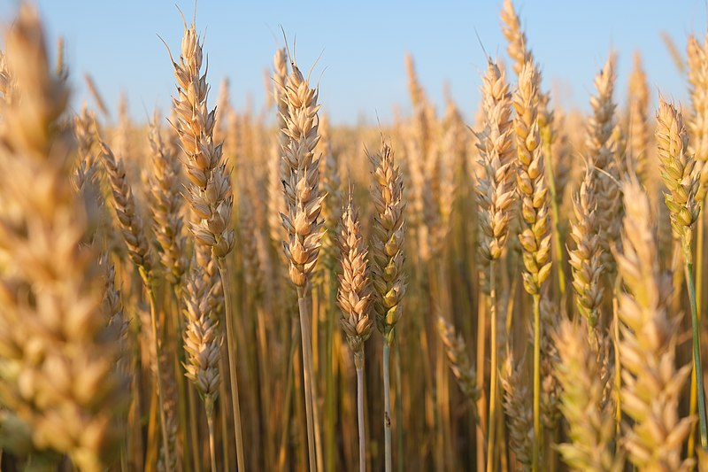

গম (ইংরেজি: Wheat) বিশ্বব্যাপী উৎপাদিত একটি
ঘাস জাতীয় উদ্ভিদ যার আদি উৎপত্তি মধ্যপ্রাচ্যের
লেভান্ট অঞ্চলে, কিন্তু এখন গম সারাবিশ্বে চাষ
করা হয়। ২০০৭ সনে গমের বিশ্ব উৎপাদন ছিল
৬০৭ মিলিয়ন টন, যা ছিল বিশ্বের ৩য় সর্বাধিক
উৎপাদিত শস্য। ১ম ও ২য় অবস্থানে ছিল যথাক্রমে
ধান ও ভুট্টা। বিশ্বব্যাপী গম এখন প্রোটিনের
নিরামিষ উৎস হিসেবে জন্যে অত্যন্ত গুরুত্বপূর্ণ যা
মানুষের খাদ্যে থাকা অত্যন্ত গুরুত্বপূর্ণ, গমে
অধিক পরিমাণে প্রোটিন থাকে, এছাড়াও ধান ও
ভুট্টাতেও এই প্রোটিন পাওয়া যায়। খাবার জন্যে
ব্যবহৃত মোট উৎপাদিত শস্য অনুযায়ী, গম রয়েছে
দ্বিতীয় অবস্থানে যখন থেকে ভুট্টাকে পশু খাদ্যের
জন্যে ব্যবহার শুরু হয় এবং ধান রয়েছে প্রথম
অবস্থানে যেহেতু ধান মানুষের খাদ্যের প্রধান শস্য।